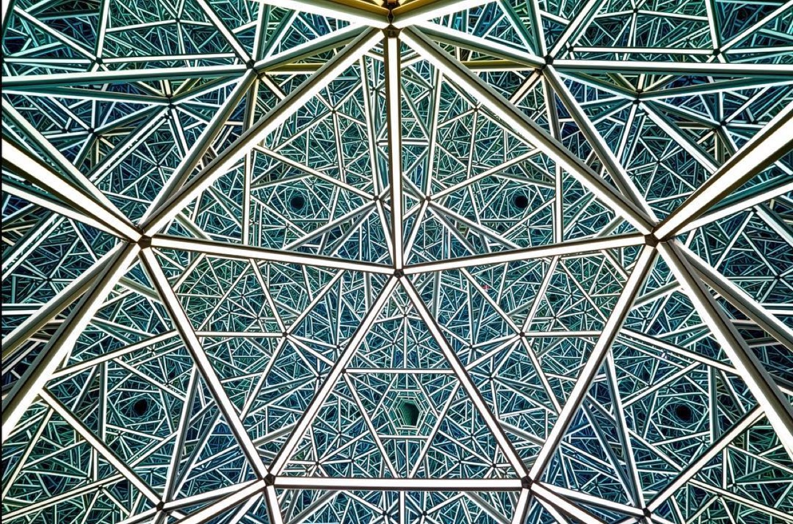

Wildlife photography documents animals within natural habitats, combining technical mastery with patience, ecological knowledge, and artistic sensibility to create images celebrating biodiversity while often serving conservation purposes. Nature documentary photographers invest extraordinary effort positioning themselves to capture animal behavior, migration, predation, and other ecological phenomena. The technical requirements include specialized telephoto lenses, environmental adaptability, and capacity to work under challenging field conditions. Contemporary wildlife photography increasingly engages with conservation themes, documenting endangered species and environmental transformation to raise ecological consciousness and support preservation efforts.
Anthony James’ Art Captures the Beauty of the Infinite

Previous articleThese Shoes Were Inspire by Furniture Design and Architecture
Next articleNow Is the Time for Arts and Crafts